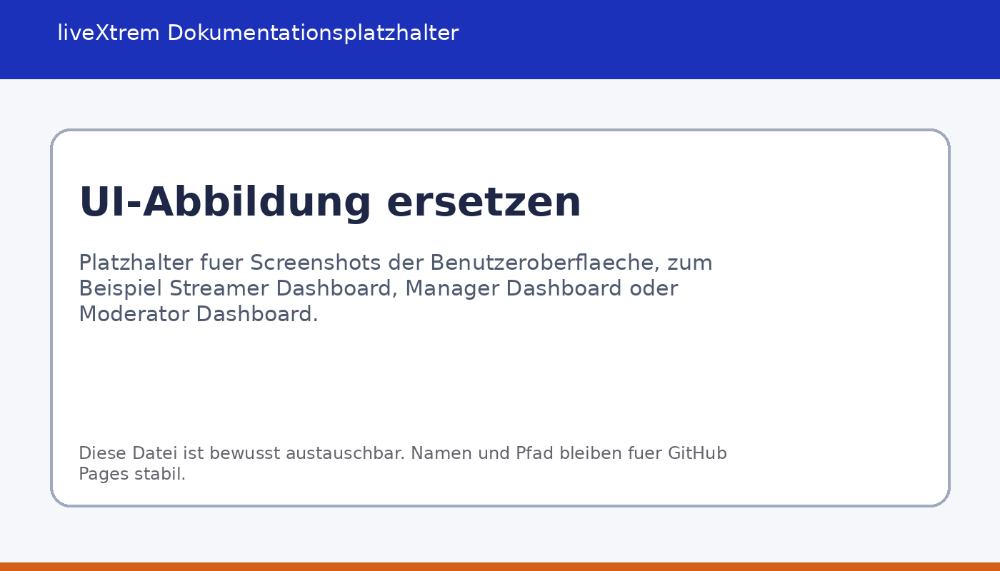

User Guide
Praktische Nutzung aus Sicht von Streamer, Moderation und Management mit typischen Abläufen im Arbeitsalltag.
Ziel dieses Handbuchs
Dieser Abschnitt beschreibt die Nutzung aus Sicht der Anwender. Ziel ist nicht nur eine Auflistung einzelner Menüpunkte, sondern ein nachvollziehbarer Überblick über typische Arbeitsabläufe. Nach dem Lesen soll klar sein, welche Rolle welche Aufgaben übernimmt und wie liveXtrem im Alltag eingesetzt wird.

1. Anmeldung und Einstieg
Nach dem Start erscheint das Login-Fenster. Bestehende Benutzer melden sich mit ihren Zugangsdaten an. Neue Streamer können während der Registrierung bereits die Verbindung zu Twitch vorbereiten. Nach erfolgreicher Anmeldung öffnet liveXtrem automatisch das Dashboard, das zur jeweiligen Rolle und zum aktiven Kontext passt.
2. Arbeiten im Streamer-Dashboard
Das Streamer-Dashboard ist der zentrale Arbeitsbereich für die operative Kanalorganisation. Hier werden Planung, Aufgaben und wirtschaftliche Grunddaten an einer Stelle zusammengeführt.
To-do-Verwaltung
Aufgaben lassen sich direkt im Dashboard anlegen, priorisieren und nachverfolgen. Typische Anwendungsfälle sind Streamvorbereitung, Abstimmungen mit Partnern, technische Nacharbeiten oder offene Community-Themen. Dadurch bleibt der Arbeitsstand im Projektkontext sichtbar und wandert nicht in verstreute Notizen ab.
Übersicht des nächsten Streams
Ein eigener Bereich hebt den nächsten geplanten Stream hervor. Das erleichtert die kurzfristige Orientierung, wenn mehrere Inhalte parallel vorbereitet werden und schnell erkennbar sein soll, welcher Termin als Nächstes relevant ist.
Geplante Streams
Über die Planungsfunktion lassen sich Streamtermine anlegen, anpassen und bei Bedarf archivieren. So entsteht eine nachvollziehbare Content-Pipeline statt einer Sammlung einzelner, schwer nachverfolgbarer Ideen.
Finanzverwaltung
Einnahmen und Ausgaben werden direkt im Dashboard erfasst und tabellarisch ausgewertet. Für die Weiterverarbeitung stehen Exporte nach PDF und CSV bereit. Das unterstützt sowohl den schnellen Überblick im Alltag als auch die spätere Dokumentation und einfache betriebswirtschaftliche Auswertung.
Team- und Rollenverwaltung
Der Streamer kann Moderatoren und Manager verwalten sowie zugehörige Informationen einsehen und pflegen. Dadurch wird Zusammenarbeit direkt im Kontext des Kanals organisiert und muss nicht über getrennte Werkzeuge koordiniert werden.
3. Arbeiten im Manager-Dashboard
Das Manager-Dashboard konzentriert sich auf organisatorische und koordinierende Aufgaben rund um geplante Inhalte und betreute Streamer-Kontexte.
Event- und Terminplanung
Hier werden Streams und Termine über eine Kalenderansicht verwaltet. Manager können Inhalte planen, Termine anpassen und den Überblick über ihre zugeordneten Streamer behalten.
Übersicht aller Events
Neben der Kalenderansicht steht eine Listenansicht mit vergangenen und zukünftigen Einträgen zur Verfügung. Diese Sicht ist besonders hilfreich, wenn gezielt nach bestehenden Planungen oder einzelnen Streamern gesucht werden soll.
Verwaltung zugeordneter Streamer
Manager arbeiten nicht global über alle Datensätze, sondern innerhalb ihrer zugewiesenen Zuständigkeiten. Das begrenzt Zugriffe nachvollziehbar und verhindert, dass organisatorische Rollen unkontrolliert auf fremde Kanäle zugreifen.
4. Arbeiten im Moderator-Dashboard
Das Moderator-Dashboard unterstützt Community-Management und konkrete Moderationsaufgaben in einem klar abgegrenzten Arbeitsbereich.
Dashboard und Historie
Zu Beginn werden Kennzahlen und zuletzt ausgeführte Moderationsaktionen angezeigt. Dadurch ist schnell ersichtlich, welche Eingriffe bereits erfolgt sind und welche Situationen möglicherweise noch nachbearbeitet werden müssen.
Chat Monitor
Der Chat-Monitor arbeitet mit VOD-basierten Chatdaten. Das ist besonders nützlich, wenn problematische Situationen nachträglich eingeordnet, Gesprächsverläufe geprüft oder Moderationsentscheidungen nachvollzogen werden müssen.
Aktionen: Timeout, Ban und Unban
Moderatoren können Benutzer zeitweise sperren, dauerhaft bannen oder bestehende Sperren wieder aufheben. Die Oberfläche führt diese Aktionen als klare Arbeitsabläufe und macht Moderationsvorgänge damit nachvollziehbar, ohne dass direkt mit API-Aufrufen gearbeitet werden muss.
5. Typische Nutzungsszenarien
Szenario A: Ein Streamer plant die kommende Woche
Der Streamer plant zunächst neue Inhalte, prüft den nächsten anstehenden Termin und überführt offene Punkte in die Aufgabenverwaltung. Anschließend können bereits Ausgaben, Kooperationen oder sonstige finanzielle Einträge ergänzt werden. So bleiben organisatorische und kaufmännische Vorbereitung in einem zusammenhängenden Ablauf.
Szenario B: Ein Manager koordiniert mehrere Termine
Der Manager öffnet die Kalenderansicht, plant Termine für zugeordnete Streamer und kontrolliert in der Listenansicht Überschneidungen oder offene Punkte. Planung wird dadurch nicht nur festgehalten, sondern auch laufend überprüfbar und für mehrere Beteiligte nachvollziehbar.
Szenario C: Ein Moderator arbeitet einen Vorfall nach
Der Moderator analysiert über den Chat-Monitor einen auffälligen Verlauf im VOD-Kontext und führt bei Bedarf einen Timeout oder Bann durch. Die Aktion erscheint anschließend in der Historie und bleibt damit für spätere Rückfragen oder weitere Maßnahmen nachvollziehbar.